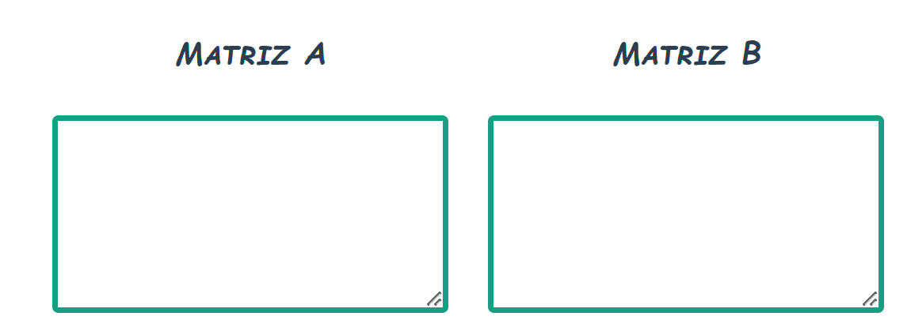
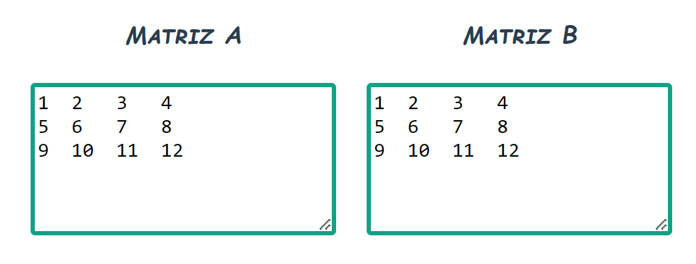
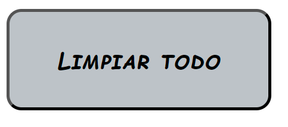
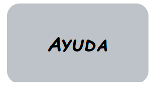
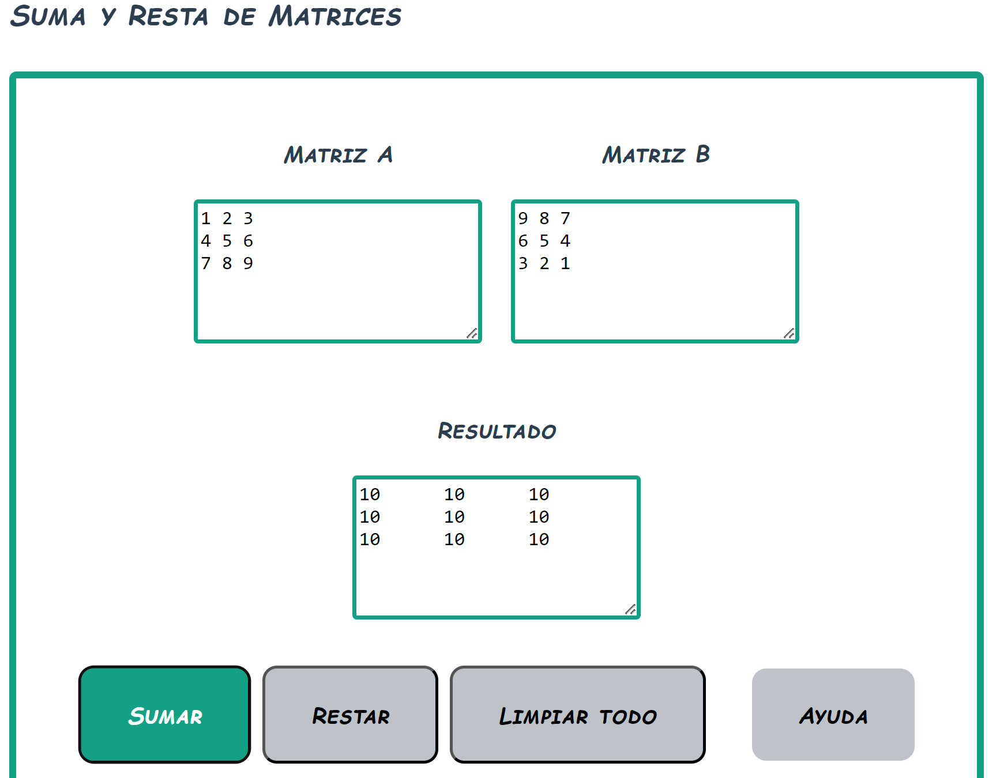
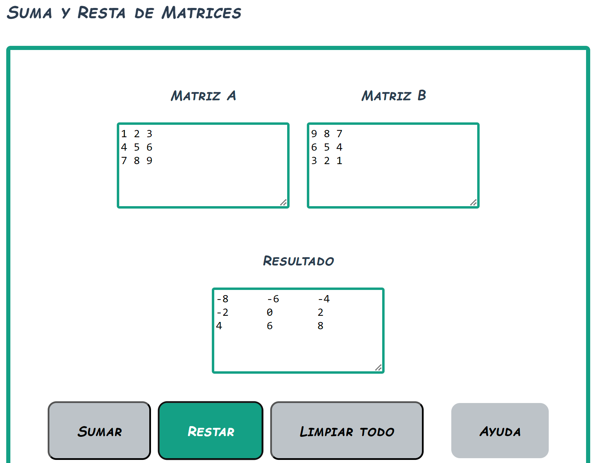

Suma y resta
Areas de texto
Las áreas de texto son los espacios designados para escribir los valores de las matrices elemento por elemento, como el siguiente ejemplo:
Escriba el primer elemento de la fila 1, dé un espacio y escriba el segundo elemento. Continúe con los elementos de la fila 1. Para escribir la fila siguiente, dé un salto de línea con la tecla enter y siga escribiendo los elementos de la fila siguiente. Repita este proceso hasta finalizar las filas de cada matriz.
Botones de acción

En la sección de suma y resta tiene 2 botones de operación. Sumar y restar. Seleccione el botón de la operación que realizará en esta sección.

El botón "Limpiar todo" servirá para limpiar todos los campos de texto y poder hacer operaciones nuevamente.
Botón de ayuda
El botón de ayuda mostrará en una ventana emergente la ayuda referente a la suma y resta de matrices.
Ejemplos
Operación suma
Al dar clic en el botón de suma luego de insertar las matrices, se mostrará el resultado en el campo de resultado.
Operación resta
Al dar clic en el botón de resta luego de insertar las matrices, se mostrará el resultado en el campo de resultado.